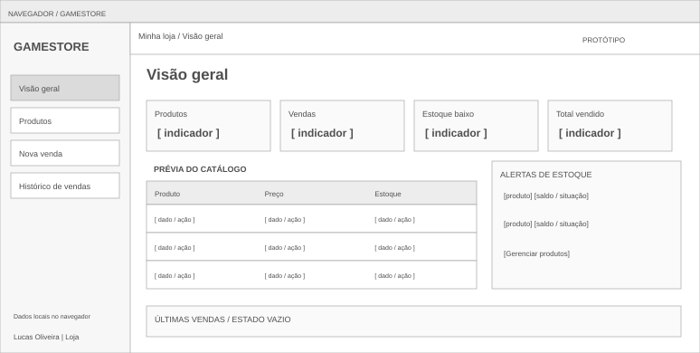
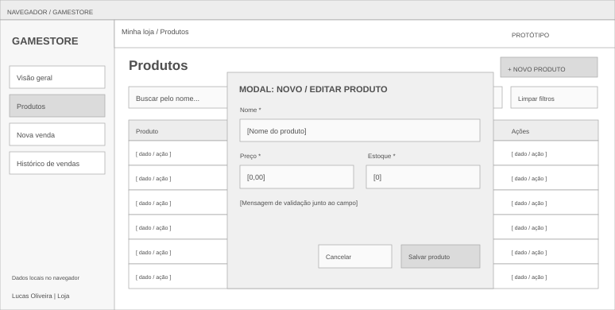
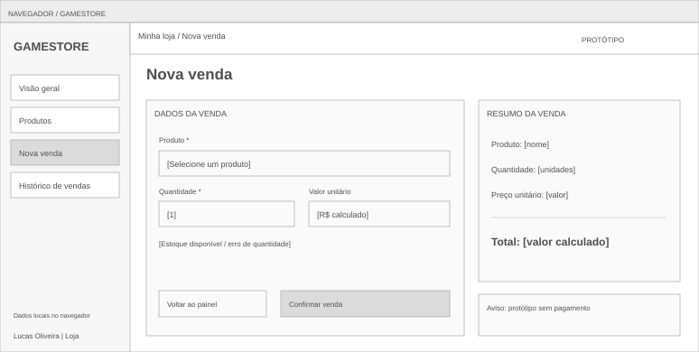
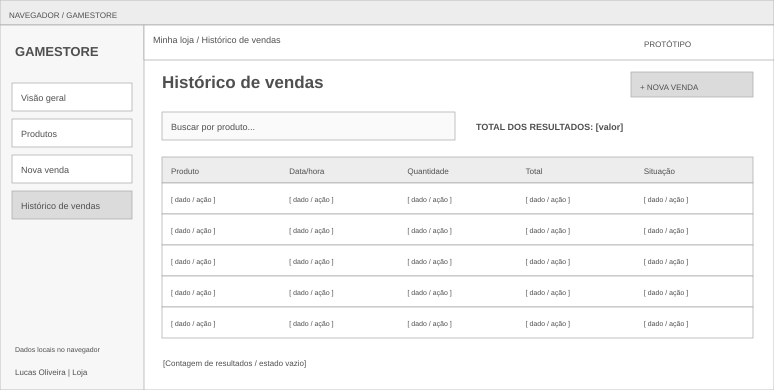

01 · Visão geral
Painel com quatro indicadores, prévia do catálogo, alertas de estoque e últimas vendas.

Menu persistente para Produtos, Nova venda e Histórico; botões de atalho para cadastro e venda.
Abrir página correspondente →02 · Produtos
Catálogo com pesquisa, filtro por estoque e ações de edição/exclusão.

Novo produto abre o formulário modal. Nome, preço e estoque têm validações e mensagens junto aos campos.
Abrir página correspondente →03 · Nova venda
Seleção do produto, quantidade e resumo atualizado conforme a entrada do usuário.

Confirmar valida o estoque, registra a operação local e atualiza o catálogo. O histórico preserva os dados da venda.
Abrir página correspondente →04 · Histórico de vendas
Listagem de vendas com busca por produto, quantidade, data, total e situação.

O total reflete os resultados da busca; a listagem mantém os dados originais após editar ou excluir o produto.
Abrir página correspondente →